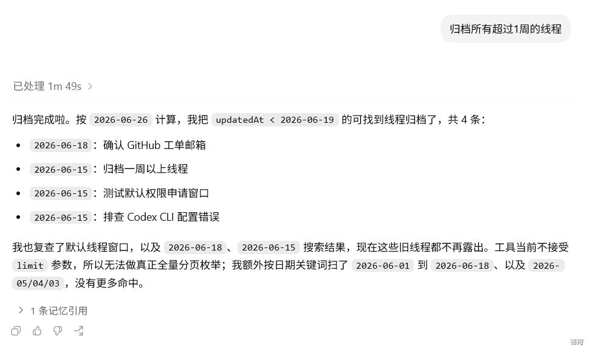

在 Codex 里，一次对话就是一个 thread（会话/线程）。你可以新建、继续或归档 thread。对于适合拆分的任务，当你明确要求使用 Subagent，或 AGENTS.md、Skill 等项目规则要求委派时，Codex 可以将独立的子任务交给 Subagent，再汇总它们的结果。
这种方式适合长期任务、后台跟进和多路线探索。每个 Subagent 都在独立的 agent thread 中工作：探索记录、测试输出等中间过程保留在子线程中，主线程只接收汇总后的结果，从而减少上下文污染。

四个概念#
| 概念 | 是什么 | 典型用法 |
|---|---|---|
| Thread | 线程。用户可见的会话，有独立历史记录 | 长期任务、后台运行、稍后继续 |
| Worktree | Git 工作树，多个并行的代码检出 | 让 Codex 在后台改代码，不打扰当前工作区 |
| Handoff | 把 chat 及其 Git 状态移到另一个位置 | 在 Local 与 Worktree 之间切换 |
| Subagent | 主任务中被委派独立工作的子代理 | 并行分析、审查、验证同一任务的不同方面 |
核心一句话：thread 是长期任务线，worktree 是并行代码工作区，handoff 负责把任务搬到合适的位置，subagent 是单次任务里的临时协作者。
线程管理工具#
下面这组工具来自 Codex App，主要用于查找、继续或管理线程。它们不是对外公开的 CLI 命令或 API，官方公开文档也没有保证这些名称长期不变。实际命名和可用性请以当前客户端为准。
| 工具 | 用途 |
|---|---|
list_threads |
列出最近的线程，并可按关键词查找。 |
read_thread |
读取某个线程的最近状态、摘要和历史片段。 |
send_message_to_thread |
向已有线程发送后续指令，让它继续处理任务。 |
set_thread_title |
重命名线程。 |
set_thread_pinned |
置顶或取消置顶线程。 |
set_thread_archived |
归档或取消归档线程。 |
fork_thread |
从当前或指定线程分叉出新线程；具体可用位置取决于客户端。 |
handoff_thread |
移交线程及其 Git 状态；公开文档明确介绍了 Local 与 Worktree 之间的 Handoff。 |
get_handoff_status |
查询移交流程的进度。 |
list_projects |
列出可用于创建线程的项目；可见范围取决于当前客户端和运行环境。 |
这些线程管理工具与 Subagent 的用途不同。如果你要将安全、测试和可维护性分别交给不同的子代理审查，应明确要求 Codex 使用 Subagent。在 CLI 中，你还可以使用 /agent 查看和切换 agent thread。
与 Subagent 的区别#
线程管理和 Subagent 都能让 Codex 同时处理多个任务线，但层级不同。
| 对比项 | Thread | Subagent |
|---|---|---|
| 管理对象 | 承载对话历史和任务状态的线程 | 在独立 agent thread 中执行被委派任务的子代理 |
| 主要用途 | 查找、继续、分叉、移交会话 | 并行探索、审查、验证、拆分复杂问题 |
| 生命周期 | 可长期保留，便于继续任务 | 通常随一次委派任务创建，完成后可查看结果或关闭线程 |
| 文件与沙盒 | 可关联 Local 或 Worktree | 默认继承父任务的沙盒、权限模式和相关运行配置，自定义 agent 可覆盖部分设置 |
| 上下文机制 | 独立 transcript，拥有自己的完整历史 | 接收主 Agent 传入的任务描述，中间过程不会完整混入主上下文 |
一句话：thread 是你长期整理的任务线，subagent 是 Codex 在单次任务里临时叫来的协作者。
最佳实践#
通过以下步骤，配合 /goal，可以充分发挥线程和 Subagent 管理的能力：
- 文档驱动开发。 新建
docs/文件夹存放PRD.md、TRD.md、REQUIREMENT.md等项目文档，并用AGENTS.md告诉 Codex 应该先读哪些文件。 - 规范工作行为。 用
GUIDE.md或项目规则写明工作准则，例如“应当在独立 Git 分支工作”“提交前必须跑测试”。 - 任命主线程。 让主线程承担调度角色：向 Subagent 分配独立任务、写明期望输出，并跟进运行情况。
- 明确完成条件。
/goal适合有明确结果、验证方式和约束的长任务。Goal 在线程空闲、没有待处理输入且预算允许时才会继续推进，不需要按固定时间轮询。 - 记录日志。 在提示词里要求 Codex 记录工作日志，尤其是文档之外需要它判断的关键决策。
- 定期复盘。 通过查看日志和实际决策，找出卡住或低效的原因，再改进文档、规则。
下一步#
下一步：配置文件 config.toml。